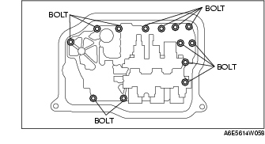
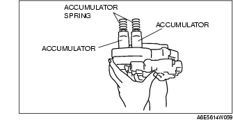

Control valve body removal [FN4A-EL]
On-Vehicle Removal
- • Using compressed air can cause dirt and other particles to fly out, causing injury to the eyes. Wear protective eyeglasses whenever using compressed air.
- • Clean the transaxle exterior throughout with a steam cleaner or cleaning solvents before removal.
- • If any old sealant gets into the transaxle during installation of the oil pan, trouble may occur in the transaxle case and oil pan. Clean with cleaning fluids.
1. Disconnect the negative battery cable.
2. Drain the ATF into a separate suitable container. (See AUTOMATIC TRANSAXLE FLUID (ATF) REPLACEMENT [FN4A-EL].)
3. Remove the oil pan.
4. Disconnect the transaxle connectors and TFT sensor.
5. Remove the oil strainer.

6. Remove the control valve body installation bolts as shown, then remove the control valve body component as shown.

7. Remove the accumulators and accumulator springs.
